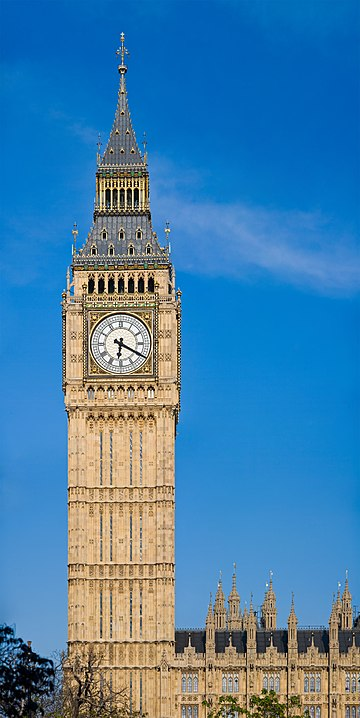

Elizabeth Tower
The tower was designed by Augustus Pugin in a neo-gothic style.
When completed in 1859, its clock was the largest and most accurate four-faced striking and chiming clock in the world. The tower stands 96 m tall.
Dials of the clock are 7.0 m in diameter.
The clock and dials were designed by Augustus Pugin.
The clock dials are set in an iron frame supporting 312 pieces of opal glass.
Some of the glass pieces may be removed for inspection of the hands.
The surround of the dials is gilded.